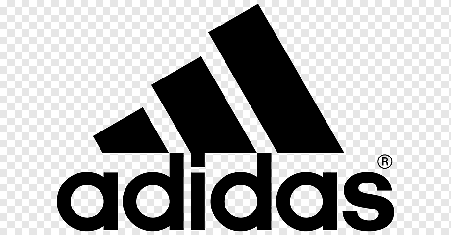
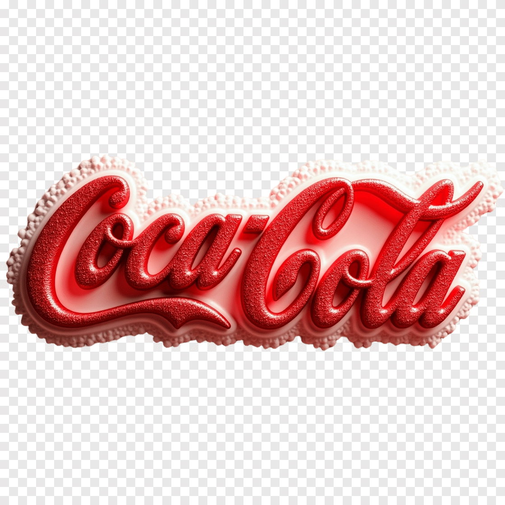
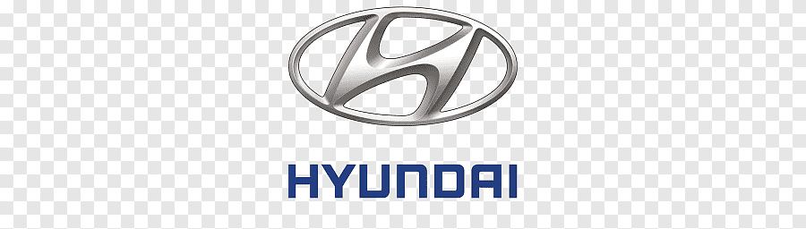

La Copa 2026
Portal informativo e histórico de la Copa Mundial de la FIFA 2026

¡España, campeona de la Copa Mundial de la FIFA 2026!
España se consagró como el equipo ganador del Mundial 2026 tras un partido cerrado con resultado 1-0 frente a Argentina, destacando su defensa y efectividad ofensiva. El torneo histórico, organizado por Canadá, Estados Unidos y México, fue el primero en contar con 48 selecciones.
Cuenta regresiva para la Copa Mundial de la FIFA 2030:
Días
Horas
Minutos
Segundos
Estructura de Grupos del Torneo
El Mundial 2026 contó con 48 selecciones distribuidas en 12 grupos de cuatro equipos.
Grupo A
- México
- Sudáfrica
- Corea del Sur
- Grecia
Grupo B
- Canadá
- Suiza
- Catar
- Nigeria
Grupo C
- Brasil
- Marruecos
- Escocia
- Haití
Grupo D
- Estados Unidos
- Paraguay
- Australia
- Polonia
Resultados de Partidos - Fases Previas
Marcadores oficiales de los encuentros disputados en la fase de grupos y rondas eliminatorias.
Argentina 3 - 1 Suiza (Prórroga)
Fecha: 11 de julio, 2026
Estadio: Estadio Arrowhead (Kansas City, EE. UU.)
México 2 - 1 Sudáfrica
Fecha: 11 de junio, 2026
Estadio: Estadio Azteca (Ciudad de México)
Corea del Sur 1 - 1 Grecia
Fecha: 12 de junio, 2026
Estadio: Akron (Guadalajara)
Canadá 2 - 1 Suiza
Fecha: 12 de junio, 2026
Estadio: BMO Field (Toronto)
Sedes Oficiales Destacadas
El torneo se disputó en 16 ciudades de Canadá, Estados Unidos y México.

Ciudad de México
País: México
Principal sede del torneo y receptor de encuentros históricos.

Nueva York / Nueva Jersey
País: Estados Unidos
Sede de la gran final entre España y Argentina (Estadio MetLife).

Toronto
País: Canadá
Una de las ciudades canadienses seleccionadas como sede oficial.
Estadios Principales
Los recintos deportivos más emblemáticos de la competición.
Estadio MetLife
Ubicación: Nueva York / Nueva Jersey, EE. UU.
Escenario encargado de albergar la gran final.
Estadio Azteca
Ubicación: Ciudad de México, México
Histórico templo del balompié mundial.
SoFi Stadium
Ubicación: Los Ángeles, EE. UU.
Maravilla arquitectónica moderna con tecnología de vanguardia.
Fase Final y Cuadro de Honor
Resultados de los encuentros decisivos que definieron al campeón del mundo.
España 2 - 0 Francia
Fecha: 14 de julio de 2026
Inglaterra 1 - 2 Argentina
Fecha: 15 de julio de 2026
Inglaterra 6 - 4 Francia (p. penales)
Fecha: 18 de julio de 2026
España 1 - 0 Argentina
Fecha: 19 de julio de 2026
Camino al Centenario: Mundial 2030
La próxima Copa Mundial celebrará los 100 años de la primera edición disputada en Uruguay.
Países Anfitriones Principales
España, Portugal y Marruecos
Estos países albergarán la mayor parte de los encuentros del Mundial 2030.
Partidos Conmemorativos
Uruguay, Argentina y Paraguay
Estos países recibirán partidos especiales relacionados con la celebración del centenario.
Preguntas Frecuentes
¿Quién ganó la Copa Mundial de la FIFA 2026?
España se coronó campeona tras vencer 1-0 a Argentina en la gran final disputada el 19 de julio de 2026.
¿Quién quedó en tercer lugar?
Inglaterra obtuvo el tercer puesto tras imponerse 6-4 en la tanda de penales ante Francia el 18 de julio de 2026.
¿Cómo avanzaron los finalistas a la definición?
España venció 2-0 a Francia en semifinales, mientras que Argentina superó 2-1 a Inglaterra.
¿Cuántas selecciones participaron?
La Copa Mundial de la FIFA 2026 fue la primera edición con 48 selecciones participantes.
¿Dónde se jugará el Mundial 2030?
España, Portugal y Marruecos serán los anfitriones principales. Además, Uruguay, Argentina y Paraguay recibirán encuentros conmemorativos.
Socios y Patrocinadores
Marcas globales oficiales que impulsan la Copa Mundial de la FIFA 2026.
Socios de la FIFA



